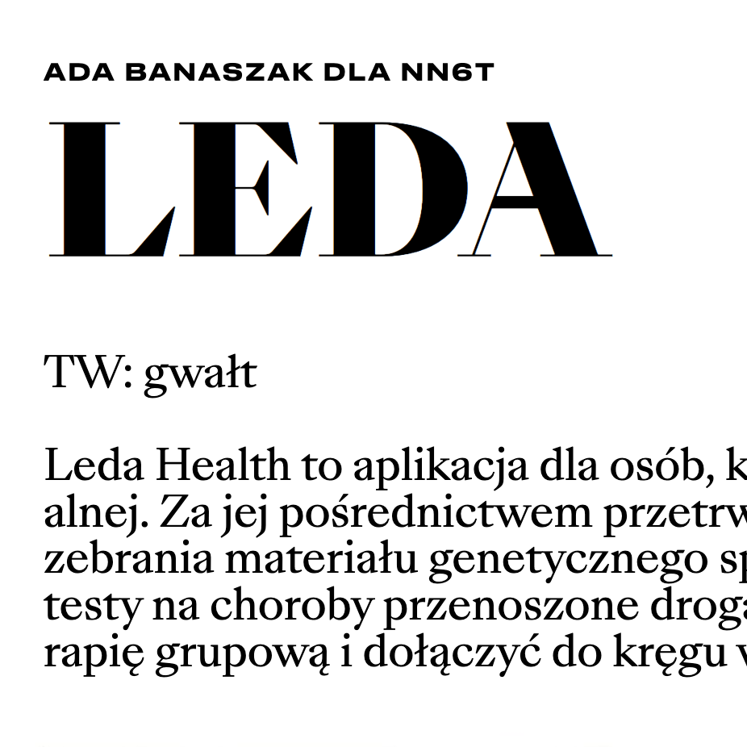
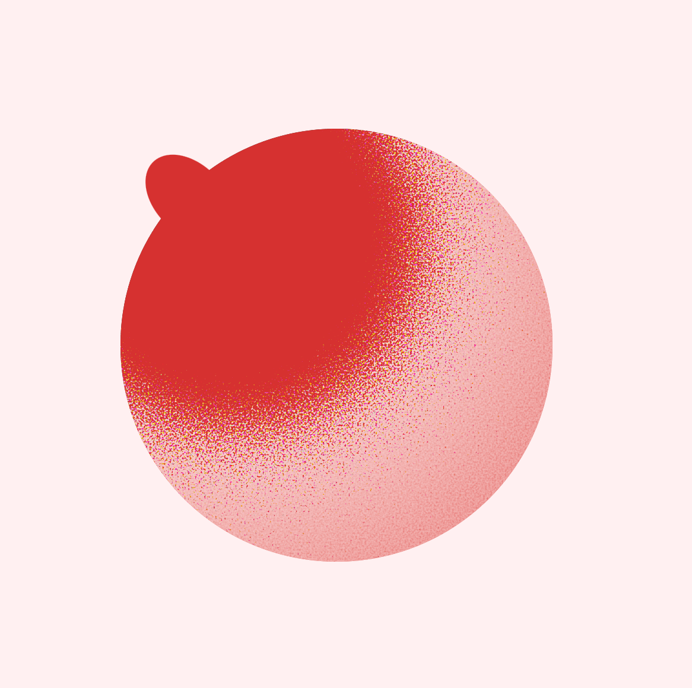

ada.banaszak
instagram links
Il. Zuzanna Warszczyńska
Uprzedzone algorytmy
Język trolla, czyli jak rozpoznać i walczyć z przemocą internetową

Notka o Leda Health w październikowym NN6T

Demo on Codepen
Jimmy Chion's article on grainy gradients in CSS Tricks